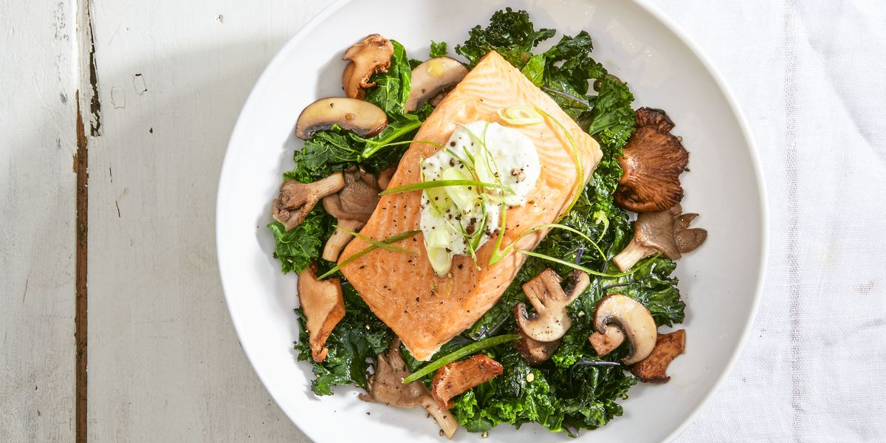
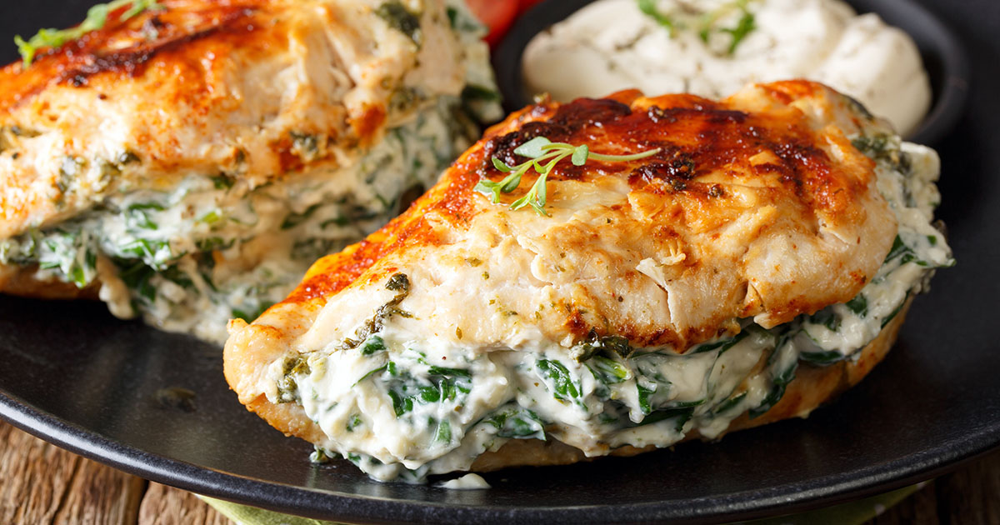
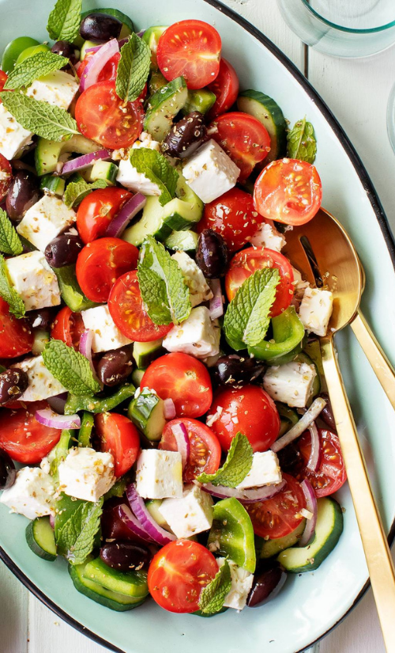

SALMON WITH SKYR AND SAUTEED KALE
Eat like a viking with this nordic inspired hearty salmon dish. Research has show it can help lower blood pressure and aid weight loss.
SPINACH STUFFED CHICKEN BREAST
Your regular chicken recipe just got a make-over. This stuffed spinach is packed with nutrients and can be prepared in less than half an hour.

GREEK SALAD
A traditional Greek salad consists of sliced cucumbers, tomatoes, green bell pepper, red onion, olives, and feta cheese. This classic combination is delicious but just adding a handful of mint leaves for a fresh finishing touch will make it better.